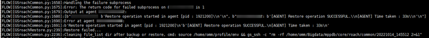

A cluster copy fails to be restored to a new cluster.
All GaussDB (DWS) node data has been successfully restored and the result has been returned to the node that delivers the restoration command. However, the node that delivers the restoration command fails to parse the result. As a result, the restoration job fails.
su - Cluster username
source Environment variable file path
Error: The return code for failed subprocess on xxx.xxx.xxx.xxx is 1
Example:
